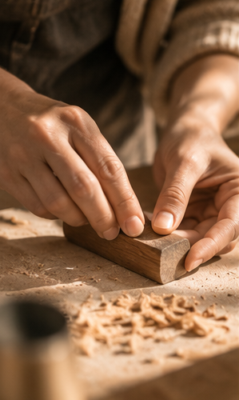

Selecting the timber
Offcuts and reclaimed wood are the foundation of my work. I carefully inspect each piece for quality and character, ensuring that every material contributes to the final design.
Handcrafted wooden wearable art, made in South Australia

Woodworking began as something I did in the quiet hours. What started with offcuts and a few hand tools has grown into a practice I now give my full attention to, working from my garage as workshop in Adelaide.
Every piece I create is a reflection of my passion for woodworking and my commitment to sustainability.
Alongside the making, I share the process through progress films, short tutorials and the occasional mistake, for anyone curious about working with timber at this scale.
Offcuts and reclaimed wood are the foundation of my work. I carefully inspect each piece for quality and character, ensuring that every material contributes to the final design.
Each form is cut, shaped and carved by hand. The grain often decides the final shape, so the design develops as the piece does.
Pieces are sanded through progressive grits and sealed with a natural oil finish, safe against skin and easy to maintain.